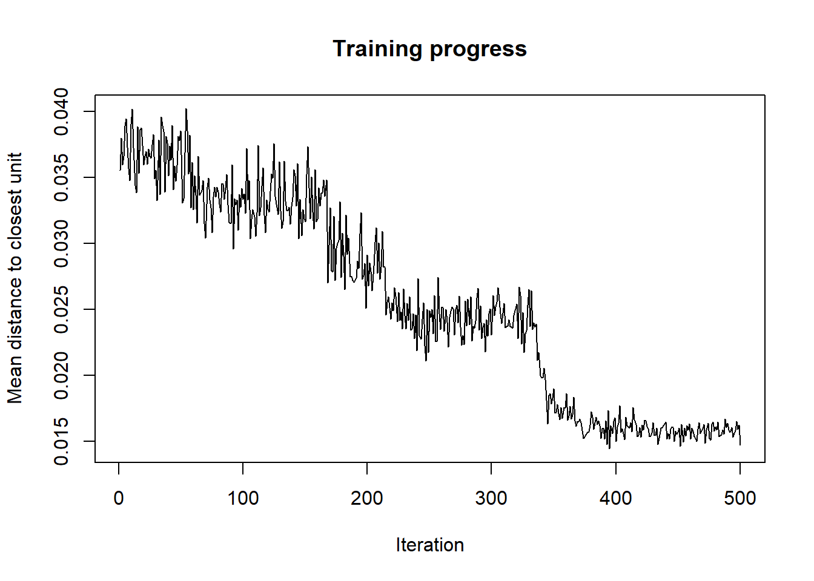
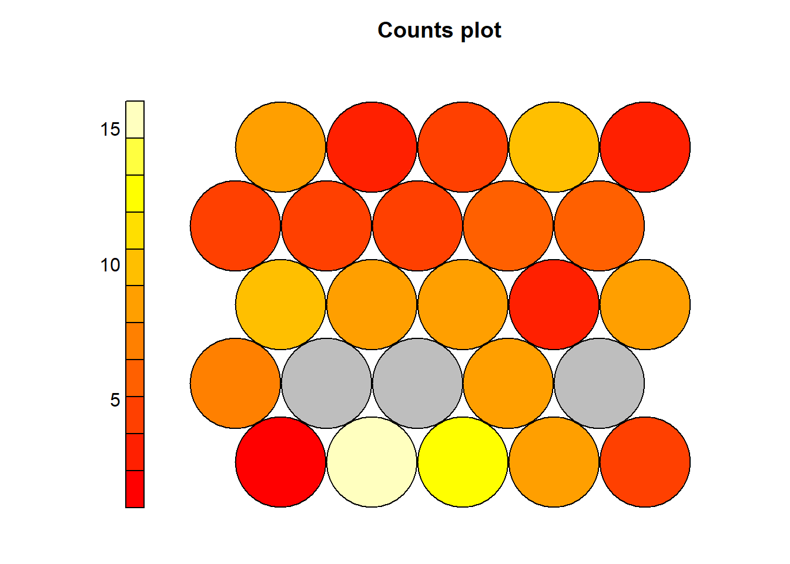
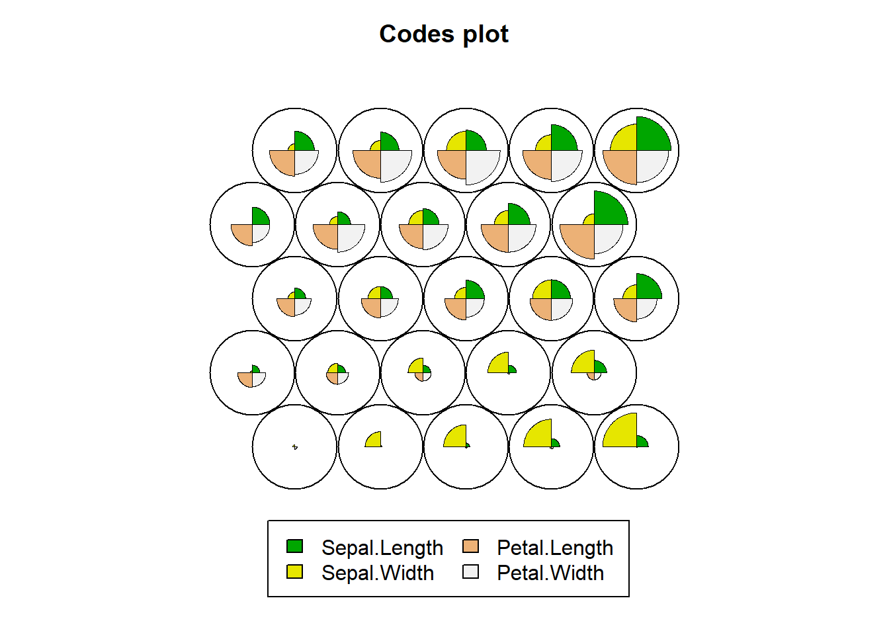
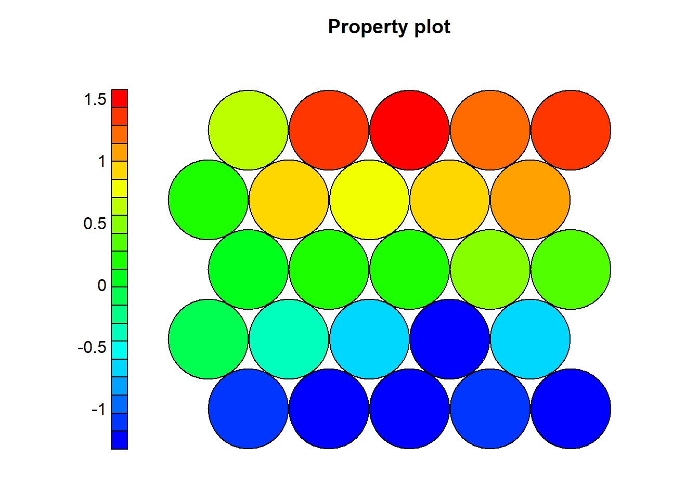
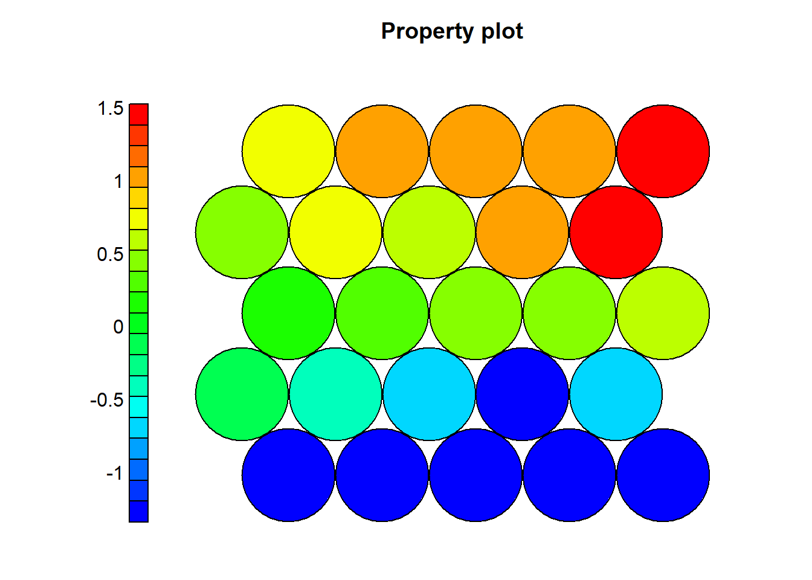
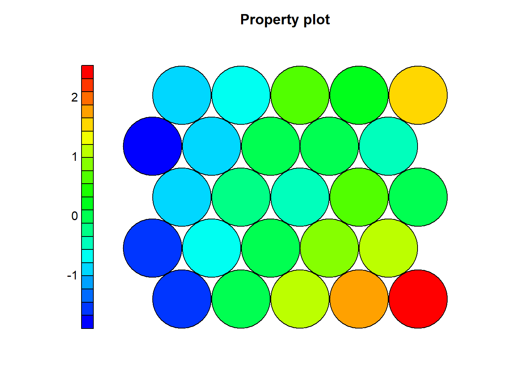
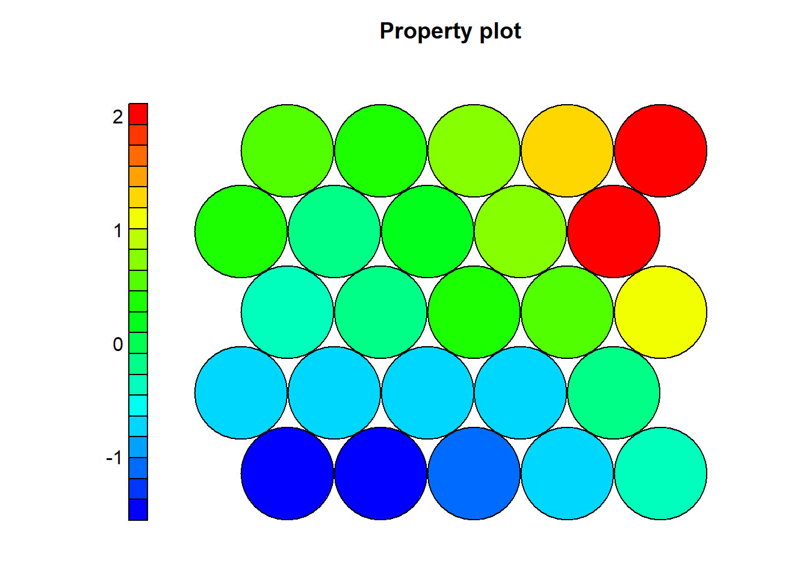
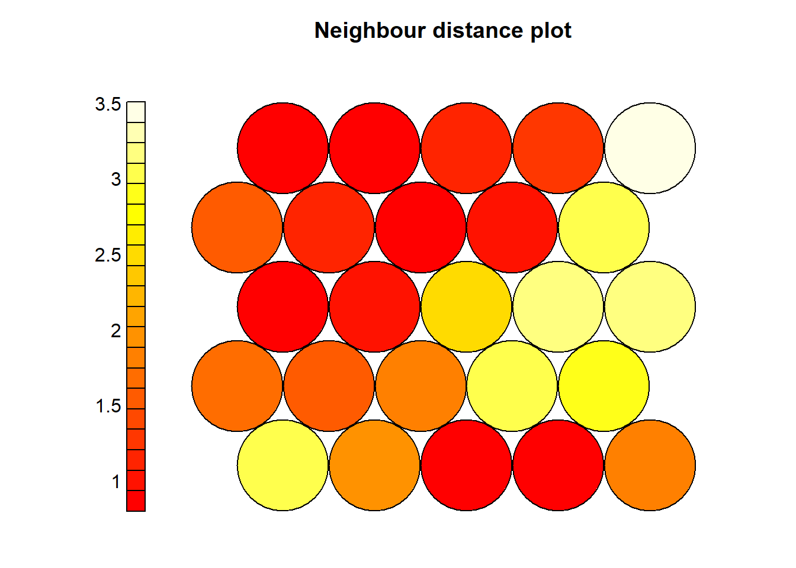
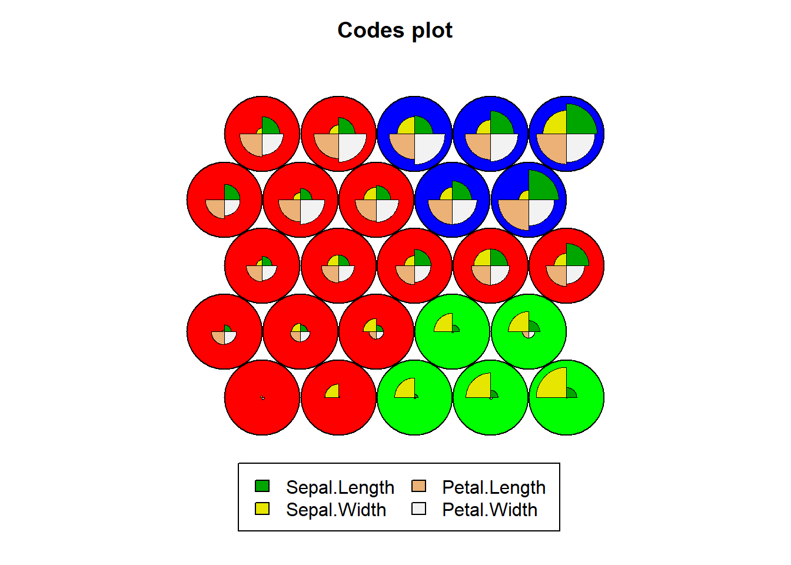

O objetivo é entender o uso de modelos de classificação tomando como base o dataset Iris do R.
summary(iris)## Sepal.Length Sepal.Width Petal.Length Petal.Width
## Min. :4.300 Min. :2.000 Min. :1.000 Min. :0.100
## 1st Qu.:5.100 1st Qu.:2.800 1st Qu.:1.600 1st Qu.:0.300
## Median :5.800 Median :3.000 Median :4.350 Median :1.300
## Mean :5.843 Mean :3.057 Mean :3.758 Mean :1.199
## 3rd Qu.:6.400 3rd Qu.:3.300 3rd Qu.:5.100 3rd Qu.:1.800
## Max. :7.900 Max. :4.400 Max. :6.900 Max. :2.500
## Species cluster
## setosa :50 Min. :1.000
## versicolor:50 1st Qu.:1.000
## virginica :50 Median :1.000
## Mean :1.647
## 3rd Qu.:2.000
## Max. :3.000Para este caso precisaremos instalar a biblioteca kohonen
install.packages("kohonen")## package 'kohonen' successfully unpacked and MD5 sums checked
##
## The downloaded binary packages are in
## C:\Users\rcrocha\AppData\Local\Temp\Rtmpc1TeYu\downloaded_packageslibrary("kohonen")Para que todos os resultados gerados de forma randomica seja sempre os mesmo é preciso definir uma semente.
set.seed(593)Media da coluna - valor do atributo dividido pelo desvio padrão da coluna
iris.sc = scale(iris[, 1:4])iris.grid = somgrid(xdim = 5, ydim=5, topo="hexagonal")iris.som = som(iris.sc, grid=iris.grid, rlen=500, alpha=c(0.05,0.01))plot(iris.som, type="changes")
plot(iris.som, type="count")
plot(iris.som, type="codes")
Comprimento da pétala
coolBlueHotRed <- function(n, alpha = 1) {rainbow(n, end=4/6, alpha=alpha)[n:1]}
plot(iris.som, type = "property", property = iris.som$codes[[1]][,4], main=names(iris.som$data)[4], palette.name=coolBlueHotRed)
Largura da pétala
coolBlueHotRed <- function(n, alpha = 1) {rainbow(n, end=4/6, alpha=alpha)[n:1]}
plot(iris.som, type = "property", property = iris.som$codes[[1]][,3], main=names(iris.som$data)[3], palette.name=coolBlueHotRed)
Comprimento da sépala
coolBlueHotRed <- function(n, alpha = 1) {rainbow(n, end=4/6, alpha=alpha)[n:1]}
plot(iris.som, type = "property", property = iris.som$codes[[1]][,2], main=names(iris.som$data)[2], palette.name=coolBlueHotRed)
#Largura da sépala
coolBlueHotRed <- function(n, alpha = 1) {rainbow(n, end=4/6, alpha=alpha)[n:1]}
plot(iris.som, type = "property", property = iris.som$codes[[1]][,1], main=names(iris.som$data)[1], palette.name=coolBlueHotRed)
Algo muito semelhança a matriz U:
plot(iris.som, type="dist.neighbours")
groups = 3
iris.hc = cutree(hclust(dist(iris.som$codes[[1]][,1:4])), groups)
#9- Adiciona a fronteira de cada cluster:plot(iris.som, type="codes", bgcol=rainbow(groups)[iris.hc])